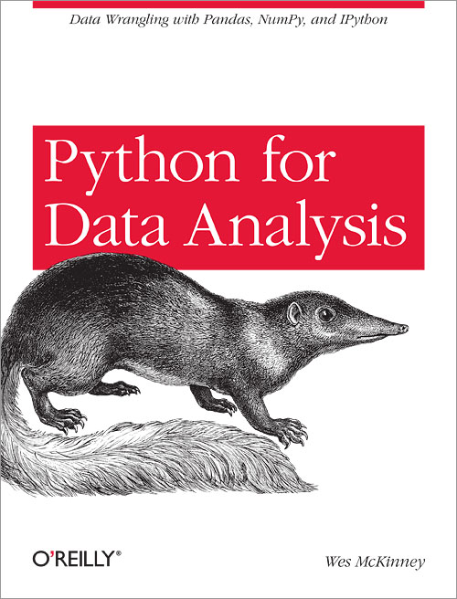

Book reviews
Deep Learning by Ian Goodfellow, Yoshua Bengio, and Aaron Courville

(Intermediate to Advanced)
Best read AFTER having briefly studied the topics using other introductory texts, since this book goes into much more detail than introductory texts. That's particularly true for Part III (autoencoders, deep generative models and so on).
Chapters 2-5 are an excellent summary of machine learning fundamentals, worth reading even if you're not actually interested in deep learning.
Artificial Intelligence: A Modern Approach by Stuart Russell, Peter Norvig

(Beginner to Advanced)
The Bible of AI. There's no better book on the subject than this one.
Reinforcement Learning: An Introduction by Richard S Sutton, Andrew G Barto

(Beginner to Advanced)
An excellent, very readable and clearly written book by two authors with decades of experience in reinforcement learning research. Starts off very simply, but covers everything in detail, with plenty of examples. Includes many more esoteric topics that are not covered in Russel and Norvig's famous Artificial Intelligence textbook. I haven't read all of it yet, but I'm looking forward to it.
A Programmer's Guide to Data Mining by Ron Zacharski

(Beginner)
A very basic introduction to data mining, but great fun to read, chockful of illustrations and jokes. It mostly concentrates on recommender systems and classification.
Réussir son référencement web by Olivier Andrieu
(Beginner to Advanced)
600 pages sur le référencement, écrit par le maitre francais du SEO. Il se concentre surtout sur le mode de fonctionnement Google, étant donné que Google fait 94 % du marché francais. Extrement détaillé, extrement lisible. Il partage tout ce qu'il a pu deduire du mode de fonctionnement de l'algo Google pendant les 20 années qu'il travaille dans le domaine. Il discute aussi des specificités en dehors du monde anglophone (domaine en fr ou com, sites multilingues, etc.) Une fois qu'on a lu ce livre, on ne sent meme plus le besoin de lire un autre sur le sujet.
Pro Android Web Game Apps by Juriy Bura

(Beginner to Intermediate)
Despite the word Android in the title, the Android-specific part is limited to one or two chapters at the end. It's actually a book about how to write webapps (not even necessarily games) that will run on any device with a browser, with or without a touchscreen. In other words, it's a HTML/CSS/JavaScript book with a heavy emphasis on graphics.
Unlike many similar books, it doesn't rely on fancy JavaScript game engines to quickly get you creating complete working games... and then leave you limited to only what that particular game engine can do. Instead, it goes through all the details of event handling, the canvas element, sprites, game maps, storing game info server-side, etc. etc. mostly in pure JS. By the time game engines are introduced, you've already learnt how to do a huge amount of stuff on your own.
Data Science : fondamentaux et études de cas by Eric Biernat, Michel Lutz
(Beginner)
Les auteurs eux-meme disent que le livre s'adresse Aux développeurs, statisticiens, étudiants et chefs de projets ayant à résoudre des problèmes de data science ; Aux data scientists, mais aussi à toute personne curieuse d'avoir une vue d'ensemble de l'état de l'art et c'est plutot exacte. Il faudrait juste remplacer data scientists par data scientists débutants.
Ca commence de zéro (que-ce que c'est le machine learning ?) et couvre tous les algos de base sans trop rentrer dans les détails. Vers la fin il y a quelques chapitres beaucoup plus specialisés notamment sur l'application du ML aux séries temporelles, tous tirés des expériences professionelles des auteurs. Très bien écrit, style très lisible. Probablement le meilleur livre pour débutants en machine learning que j'ai lu quelque soit la langue.Python for Data Analysis by Wes McKinney
(Beginner)
Comprehensive guide to the python data analysis library pandas, written by the initial developer of pandas himself. Also a good introduction to the basic python toolkit for data analysis : ipython, matplotlib and some parts of numpy (the parts you need if you do data analysis but not applied maths), and to some of the basic ideas, e.g. data wrangling, handling time series, interacting with APIs...
Techniques de référencement web by Alexandra Martin, Mathieu Chartier
(Intermediate to Advanced)
Ouvrage beaucoup plus technique que la majorité des livres sur le référencement. 540 pages avec de nombreux détails techniques que l'on ne trouve pas facilement ailleurs.